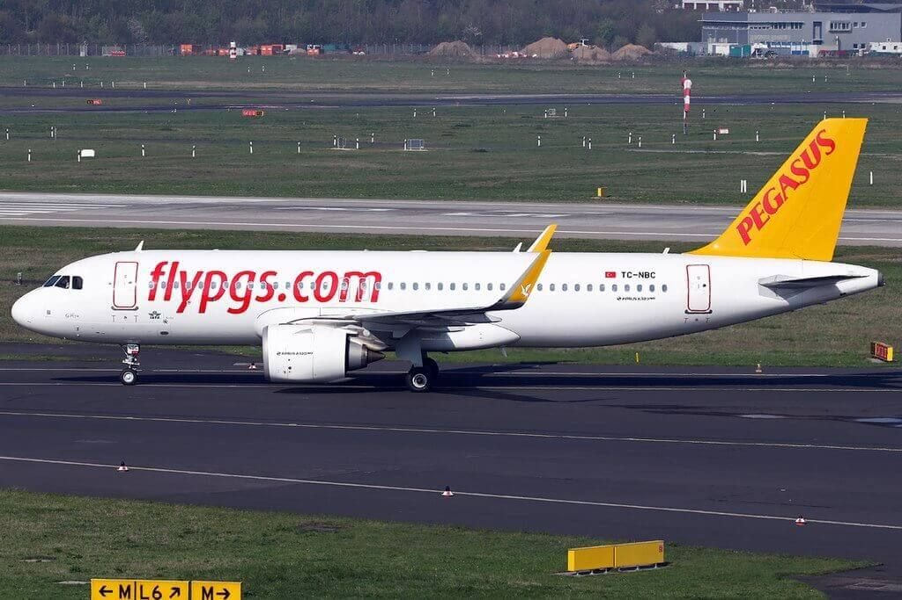

Pegasus Pilotluk Hakkında Her Şey
Pegasus Hava Yolları, belirli dönemlerde Yetiştirilmek Üzere II. Pilot Aday Adayı ilanı yayımlamakta ve seçim sürecini başarıyla tamamlayan adayları MPL Cadet Pilot Programı kapsamına almaktadır.
Pegasus Hava Yolları’nın kendi bünyesinde faaliyet gösteren bir uçuş okulu bulunmamaktadır. Programa kabul edilen adaylar, pilotaj eğitimlerini almak üzere şirketin anlaşmalı olduğu AYJET ve AFA gibi yetkili uçuş okullarına yönlendirilmektedir.
MPL Sistemi Nedir?
MPL, Multi-Crew Pilot License ifadesinin kısaltmasıdır. Bu lisans türü, Uluslararası Sivil Havacılık Örgütü (ICAO) tarafından geliştirilmiş olup, hava yolu işletmelerinin operasyonel ihtiyaçlarını esas alan ve kokpitte ekip çalışmasına odaklanan bir eğitim anlayışına dayanır.
ATPL (Airline Transport Pilot License) ile karşılaştırıldığında, MPL sisteminin temel farkı bireysel uçuş deneyiminden ziyade çoklu ekip operasyonlarını merkeze almasıdır. Eğitim süreci büyük ölçüde simülatörler üzerinden yürütülür ve bu sayede kontrollü, standartlaştırılmış ve emniyet seviyesi yüksek bir eğitim ortamı sağlanır.
MPL eğitimini başarıyla tamamlayan ve ilgili tip yetkisini alan adaylar, II. Pilot olarak yalnızca eğitim aldıkları hava yolu şirketi bünyesinde uçuş görevlerine başlamak ile yükümlüdür. Gerekli uçuş tecrübesi olan en az 1500 saate ulaşıldığında ve mevzuatta belirtilen şartlar sağlandığında, MPL lisansı ATPL lisansına dönüştürülebilmektedir.
Eğitim Süreci ve Maliyet
Başlangıç ve temel eğitim aşamaları Faz 1 ve Faz 2 olarak adlandırılmakta olup, AYJET veya AFA uçuş okullarında gerçekleştirilmektedir. Teorik eğitimler ile uçuş uygulamalarını kapsayan bu dönem ortalama 15 ay sürmektedir.
Orta ve ileri seviye eğitimler ise Faz 3 ve Faz 4 olarak nitelendirilir. Tip eğitimini içeren bu safhanın süresi yaklaşık 6 aydır. Verilecek uçak tipi yetkisi Airbus A320 yada Boeing 737 'dir.
Toplamda yaklaşık 2 yıl süren temel eğitim ve tip eğitiminin toplam maliyeti 110.000 Euro ’dur. Bu bedel, adayların II. Pilot olarak göreve başlamalarının ardından, yaklaşık 10 yıllık bir süre içinde maaşlarından yapılan kesintilerle geri ödenir. Kesinti oranı, aylık maaşın %25’ini aşmayacak şekilde düzenlenmektedir.